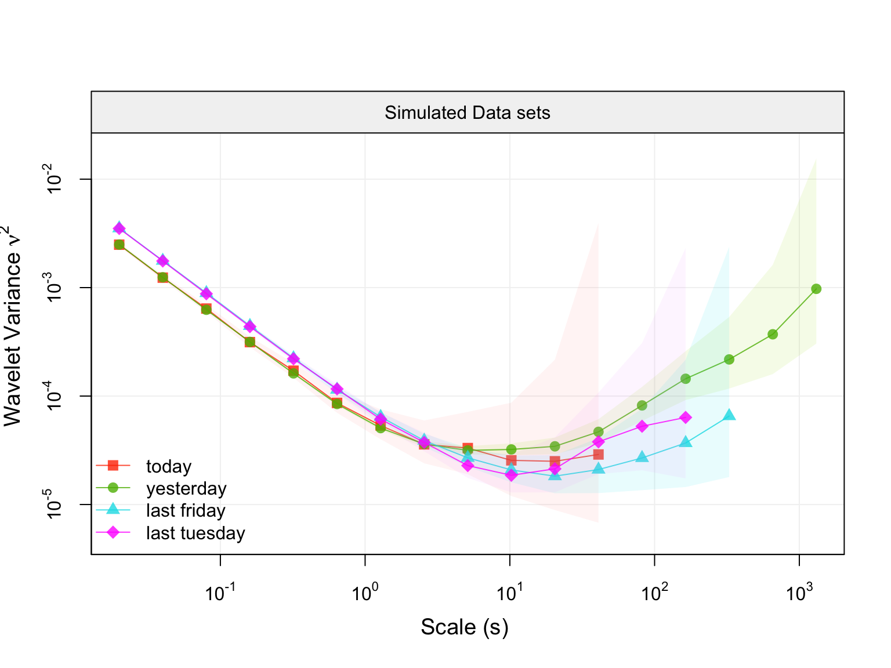
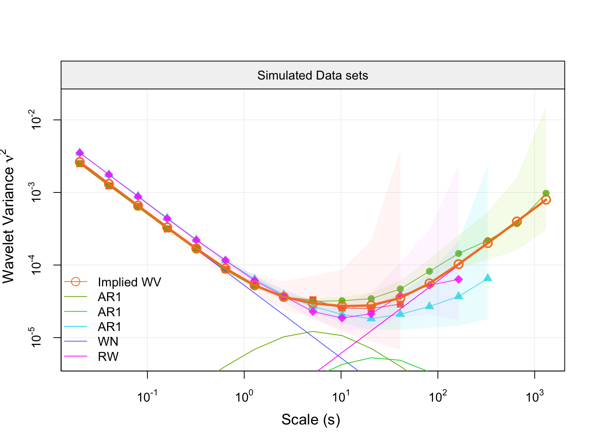

Multisignal GMWM (mgmwm) R package estimates parameters from multiple replicates coming from an IMU error signal, apply the near-stationarity test and select the nost approriate model
To see what mgmwm is capable of, please refer to the “Vignettes” tabs above.
Install Instructions
To install the mgmwm package, there is currently one option: GitHub.
Installing the package through GitHub
For users who are interested in having the latest developments, this option is ideal. Though, more dependancies are required to run a stable version of the package. Most importantly, users must have a compiler installed on their machine that is compatible with R (e.g. Clang).
The setup to obtain the development version of mgmwm is platform dependent.
Requirements and Dependencies
OS X
Some users report the need to use X11 to suppress shared library errors. To install X11, visit xquartz.org.
Linux
Both curl and libxml are required.
For Debian systems, enter the following in terminal:
sudo apt-get install curl libcurl3 libcurl3-dev libxml2 libxml2-devFor RHEL systems, enter the following in terminal:
sudo yum install curl curl-devel libxml2 libxml2-devAll Systems
The following R packages are also required. If you have made it this far, run the following code in an R session and you will be ready to use the devlopment version of mgmwm.
# Install dependencies
install.packages(c("RcppArmadillo","devtools","knitr","rmarkdown", "iterpc", "progress"))
# Install dependencies from github
devtools::install_github(c("SMAC-Group/simts", "SMAC-Group/wv", "SMAC-Group/gmwm"))
# Install the package from GitHub without Vignettes/User Guides
devtools::install_github("SMAC-Group/mgmwm")
# Install the package with Vignettes/User Guides
devtools::install_github("SMAC-Group/mgmwm", build_vignettes = TRUE)Package capabilities example
Create a M-IMU object
In order to use the mgmwm package, one need to create a mimu object through the function make_mimu. An example on how to use this function is provided hereunder with simulated data:
library(simts)
library(wv)
library(gmwm)
library(mgmwm)
# Define the differente sample size for simulated data
n1 = 10000
n2 = 500000
n3 = 100000
n4 = 50000
# Define the model for simulated data
model1 = AR1(.995, sigma2 = 1e-6) + WN(.005) + RW (1e-7)
model2 = AR1(.990, sigma2 = 1e-6) + WN(.007) + RW (1e-7)
# Generate 4 replicates coming from the above models
Wt = gen_gts(n1, model1)
Xt = gen_gts(n2, model1)
Yt = gen_gts(n3, model2)
Zt = gen_gts(n4, model2)
# Create the mimu object
mimu = make_mimu(Wt ,Xt, Yt, Zt, freq = 100, unit = "s", sensor.name = "Simulated Data sets",
exp.name = c("today", "yesterday", "last friday","last tuesday" ))
# Plot the data at hand
plot(mimu)
Estimates parameters values and plot function
# Specify the model which you want to estimate
model = 3*AR1() + WN() + RW ()
# Estimate the model with the mgmwm function
fit_1 = mgmwm(mimu, model, CI = T)
# Print summary of estimation (Parameters values and respective confidence intervals if computed)
summary(fit_1)
#> $estimates
#> Estimates CI Low CI High
#> AR1 9.992563e-01 9.981725e-01 9.999349e-01
#> SIGMA2 4.572730e-09 1.801417e-09 2.776215e-08
#> AR1 9.933242e-01 9.873649e-01 9.958664e-01
#> SIGMA2 9.046298e-07 1.271017e-07 1.001078e-06
#> AR1 9.949677e-01 9.863666e-01 9.961555e-01
#> SIGMA2 2.391295e-07 8.202180e-08 8.840020e-07
#> WN 5.260222e-03 4.983116e-03 7.057402e-03
#> RW 1.077516e-07 5.335992e-08 1.122293e-07
#>
#> $obj_value
#> Value Objective Function
#> 357.3036
#>
#> $near_stationarity_test
#> [1] "Near-stationarity test not computed. Set `stationarity_test = TRUE`"
#>
#> $p_value_nr_test
#> [1] NA
# Plot the Empirical Wavelet Variance with the one Implied by the parameters
plot(fit_1)
# Plot the Empirical Wavelet Variance with the one Implied by the parameters with the contribution
# of each individual processes
plot(fit_1, decomp = T)
** Select model and compare the selection criteria **
# Compute the Wavelet Variance Information Criterion (WVIC) on all nested models
model_selection_1 = model_selection(mimu, model)
# Plot the selected model Implied WV
plot(model_selection_1)
# Plot the equivalent model WV
plot(model_selection_1, type = "equivalent")
# Plot the value of the WVIC for every nested model with their respective confidence intervals
plot(model_selection_1, type = "wvic_all")
# Plot the value of the WVIC for equivalent model(s) with their respective confidence intervals
plot(model_selection_1, type = "wvic_equivalent")The models in green are the equivalent models with the same or less models complexity, with respect to the number of parameters to estimate.